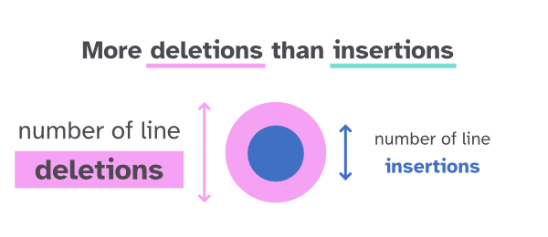
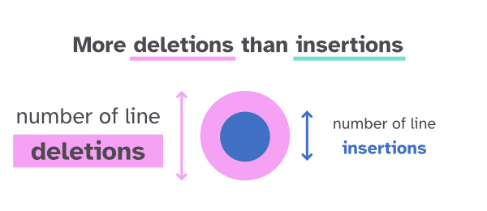
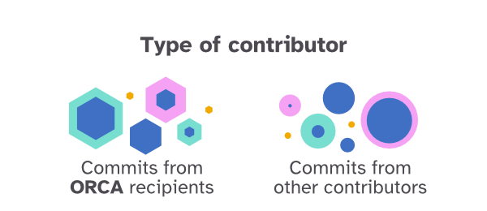
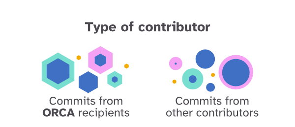

All Commits made for
mozilla/pdf.js
The mozilla/pdf.js repository has seen many improvements from its various contributors since the first commit. The visualization below shows all commits that have been made since then.
Each commit is represented as a small circle. They're grouped together by commit month, giving an overview of which periods had relatively few updates while other time periods saw a lot of activity.
Commits made by ORCA supported contributors are shown as small hexagons. For more info on what the "Open Retrospective Compensation Agreement" is, see farther down.
Hover of a circle to get more information about the commit and also see all the other commits made by the same author (based on matching by author name). Click on a circle to fix the visual on all the commits from that author. Click anywhere else to reset. At the bottom of the visual you can search for a contributor by name.
HOW TO READ THIS VISUAL
 



⏺ Note | Size doesn't scale completely linearly with number of lines changed ⏺
 

Crunching all the commits...
author
committed on
February 7, 2024
release
v4.7.09
changes made
3 files changed
468 insertions (+) / 263 deletions (-)
commit hash
Search for a contributor
ORCA
What is ORCA
ORCA (the "Open Retrospective Compensation Agreement") is an experimental retroactive funding model for open source contributors to receive financial compensation for their contributions. ORCA recipients receive an award that reflects the value of their contribution to the hosting organization’s activities.
Why ORCA
The importance of open source projects in today’s software development ecosystem highlights the growing need for new funding models to sustain the work of volunteers around the globe. ORCA is a way for companies to recognize and fund non-employee contributors to the projects that enable their businesses, which is an important contribution to the longevity of the community.
ORCA in Practice
ORCA provides organizations with a streamlined process for committing funds back to their contributor base. To participate in funding with ORCA, a company begins by opening a contributor fund as a share of their revenue. Each quarter, teams identify the highest-impact work from non-employees to selected projects, and use their contributor fund to commit funds to pay the contributors. Through ORCA, open source contributors are recognized for the way that their work unlocks business potential and accelerates innovation through working in the open.
The ORCA recipients for mozilla/pdf.js
Below is a list of the people that have received ORCA from Mozilla for making noteworthy contributions to pdf.js. These people have not been compensated through other means, such as being an employee of Mozilla.
- Jonas Jenwald | A major contributor, who has a huge impact on the project.
- Tim van der Meij | A major contributor, who has a huge impact on the project.
Click on any of the names to see all of their commits highlighted in the visual.
(based on a match on either the name or the email used for the ORCA application)
TECHNICAL DETAILS
The Complexity
This section is for those that would like to learn a little about how this visual works on a technical level. In general, I used many of d3.js's handy layout functions. The actual drawing happens with an HTML5 canvas, because with thousands of small circles to be drawn, SVG would perform too slowly. Especially since there is also an animation and hover & click events.
I find that the best way to get a nice round grouping of circles, is to use d3.forceSimulation. However, for the case of mozilla/pdf.js, there are over 100 months to run such a simulation for. This made the page too slow to load if I let the force simulation run for each month first.
I could have pre-calculated the positions and then used these final positions to instantly create the visual for any viewer. However, I want this visual, its code, to be able to handle the commit history of (almost) any repository. Therefore, I couldn't use any pre-calculation.
I tried many approaches to make the calculations faster to still have all the calculations performed at the start (e.g. web workers). However, nothing proved fast enough. In the end, I instead combined several functions and a loading animation to make the "perceived" performance seem fast enough (although perhaps not on mobile).
You can read more about how to take this visualization and apply it to another dataset in the visual's GitHub repository.
The Approach
Step 1 | First I use d3.packSiblings on all the commits of a month to pack them into a circle. This is a good start (but often visually not good enough for a case like this where all of the circles have different radii).
Step 2 | Next, I use d3.packEnclose to get the radius of the smallest enclosing circle that fits all of the commit circles. These two functions run really fast and with the information of the smallest enclosing circle, I draw the blue timeline with the month circles on top.
Step 3 | With the timeline drawn I then loop over each month's commits again and now run a proper d3.forceSimulation for each month. Once a month is done, I let the circles slowly appear in an animation and move on to the next circle to run the simulation and afterwards let it appear. Doing this for all of the months takes several seconds, but due to the "fading in" of each month, it turns the result into an intriguing animation.
Step 4 | After all the months have gone through the force simulation, many of them can get a smaller enclosing circle (because the simulation does a better job of packing the circles in a tight ball than the initial (fast) packing approach). In the end, I therefore quickly run the d3.packEnclose one more time and draw the visual in its end state, with nicely fitting circles around each month.
DATA DETAILS
I used the following (terminal) code to get the git commit history of a repository (Thanks to Adam Bouhenguel, the initiator of ORCA). You need to be in the repository's folder to run this (clone it to a folder through git clone https://github.com/mozilla/pdf.js.git).
( echo "commit_hash", "decorations","committer_email", "committer_name", "commit_time", "author_email", "author_name", "author_time", "commit_title";
git log --pretty='format:commit, %H, ^%D^, %ce, ^%cN^, %ci, %ae, ^%aN^, %ai, ^%s^' --shortstat --tags -M20 -C20 origin/master )
> log.txt
You can find more information about what kind of git log options you have in the pretty-formats and git log documentation.
It's this dataset that contains all of the information that is used in this visual and its almost perfect to use as-is. However, the number of files changed, line insertions and line deletions are added as a separate row each time. Something such as 2 files changed, 13 insertions(+), 26 deletions(-). Therefore, to get this final bit in a csv ready format, I had to run the txt file through R for some final minor data preparation (you can find this R file in the data folder of this visual's repository).
You can find
Why the weird ^ around some of the fields. Honestly, because it was the only way I could get the textual fields, such as the commit title, to be read properly in R. Otherwise some of the rows would split up into new columns due to the usage of a variety of ", ', `, # and other marks. I therefore used the ^ to act as a quote.
Visualization Designed & Created by Nadieh Bremer | Visual Cinnamon
Made possible through the MIECO program of Mozilla.